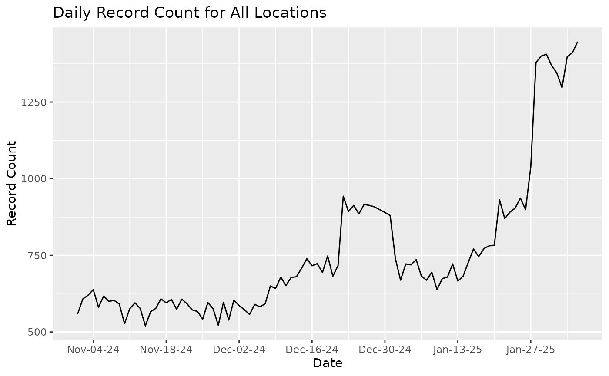

Generate a timeseries plot of count information by date and location given a frame of count-by-location-and-date data and an optional end_date
Usage
generate_time_series_plot(
time_series_data,
end_date = NULL,
plot_type = c("ggplot", "plotly"),
locations = "All Locations",
...
)Arguments
- time_series_data
data frame generated by `generate_time_series_data`
- end_date
optional end date to truncate date
- plot_type
string indicating either a "ggplot" or "plotly" result. If the requested backend is unavailable, the function warns and falls back to the other backend when available.
- locations
string indicating location name (defaults to "All Locations")
- ...
passed onto plotly
Examples
ts <- generate_time_series_data(example_count_data)
generate_time_series_plot(ts)

generate_time_series_plot(ts, plot_type = "plotly")